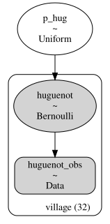
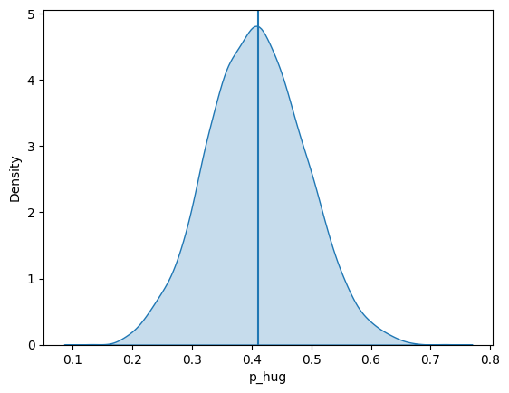

Code
import pandas as pd
import numpy as np
import matplotlib.pyplot as plt
import seaborn as sns
import pymc as pmDSAN 5650: Causal Inference for Computational Social Science
Summer 2026, Georgetown University
This question is going to feel a bit “in the weeds” at first – because it is – but points to the importance of the library of missing datasets which lurks behind any actually-existing dataset you may find! It also relates to Berkson’s Paradox, which will be the subject of Part 2 below.
import pandas as pd
import numpy as np
import matplotlib.pyplot as plt
import seaborn as sns
import pymc as pmpub_url = "https://raw.githubusercontent.com/jpowerj/dsan-content/refs/heads/main/2025-sum-dsan5650/cahiers_official.csv"
pub_df = pd.read_csv(pub_url)
pub_df.head()| village_name | published | huguenot | |
|---|---|---|---|
| 0 | ARRAS (ARTOIS) | True | False |
| 1 | AURAY, REUNI A VANNES (SEN) | True | False |
| 2 | AUTUN | True | True |
| 3 | BOULAY, REUNI A SARREGUEMINES | True | True |
| 4 | CALAIS | True | False |
As the following cell shows, there were 32 villages whose cahiers were deemed “exemplary” of the grievances of France as a whole:
len(pub_df)32And, as the following cell makes clear, over 40% of these “exemplary” cahiers contained grievances about the treatment of French Protestants (Huguenots):
pub_df['huguenot'].value_counts(normalize=True)huguenot
False 0.59375
True 0.40625
Name: proportion, dtype: float64In the following code cell, use PyMC to create a generative model of the published cahiers as follows:
p_hug, representing the overall probability that a given cahier contains a grievance related to treatment of Huguenotshuguenot, a binary variable which has the value 1 for villages whose cahier contains a grievance related to treatment of Huguenots, and 0 for villages whose cahier does not contain such a grievance.p_hug and huguenot should be linked such that the probability of huguenot taking the value 1 is exactly p_hug – the included line of code at the end of the cell prints the model as a PGM, where there should be an arrow from the p_hug node to the huguenot node!
village_idx, village_name = pub_df['village_name'].factorize()
print(village_idx)
print(village_name)[ 0 1 2 3 4 5 6 7 8 9 10 11 12 13 14 15 16 17 18 19 20 21 22 23
24 25 26 27 28 29 30 31]
Index(['ARRAS (ARTOIS)', 'AURAY, REUNI A VANNES (SEN)', 'AUTUN',
'BOULAY, REUNI A SARREGUEMINES', 'CALAIS', 'CARCASSONNE',
'CARIGNAN, REUNI A SEDAN', 'CHATEAU-SALINS, REUNI A SARREGUEMINES',
'COMMINGES', 'COUTANCES, BAILLIAGE PRINCIPALE',
'DIGNE, REUNI A FORCALQUIER', 'DOLE', 'DRAGUIGNAN, CENTRE DE REUNION',
'FORCALQUIER, CENTRE DE REUNION', 'LAMARCHE, REUNI A BAR-LE-DUC',
'LIMOGES', 'LONGWY, REUNI A METZ (BAILL)', 'LUNEVILLE, REUNI A NANCY',
'MELUN', 'MONTREUIL-SUR-MER', 'NANCY, CENTRE DE REUNION', 'PAMIERS',
'PARIS (HORS-LES-MURS)', 'REIMS', 'SARRELOUIS, REUNI A METZ (BAILL)',
'SAUMUR', 'SENLIS', 'SENS', 'THIAUCOURT, REUNI A BAR-LE-DUC',
'TOULON, CENTRE DE REUNION', 'VERDUN, CENTRE DE REUNION',
'VILLEFRANCHE (BEAUJOLAIS)'],
dtype='str')# @title Q1.1-response
pub_coords = {
'village': village_name
}
with pm.Model(coords=pub_coords) as pub_model:
# Your code here: model the two random variables p_hug and huguenot as
# described above
huguenot_obs = pm.Data('huguenot_obs', pub_df['huguenot'], dims='village')
p_hug = pm.Uniform('p_hug', lower=0, upper=1)
huguenot = pm.Bernoulli('huguenot', p=p_hug, observed=huguenot_obs, dims='village')
# p_hug =
if pub_model is not None:
display(pm.model_to_graphviz(pub_model))
Now, in the following code cell, sample from the prior predictive distribution using PyMC’s sample_prior_predictive() function, storing the result in a variable named pub_prior_idata. Once this variable is created correctly, the remaining provided code will construct a Pandas DataFrame and plot the distribution of p_hug:
# @title Q1.2-response
# Your code here: create a variable pub_prior_idata containing the predictive prior
# distribution
pub_prior_idata = pm.sample(model=pub_model)Initializing NUTS using jitter+adapt_diag...
Multiprocess sampling (4 chains in 4 jobs)
NUTS: [p_hug]Sampling 4 chains for 1_000 tune and 1_000 draw iterations (4_000 + 4_000 draws total) took 1 seconds.pub_prior_idata<xarray.DataTree>
Group: /
├── Group: /posterior
│ Dimensions: (chain: 4, draw: 1000)
│ Coordinates:
│ * chain (chain) int64 32B 0 1 2 3
│ * draw (draw) int64 8kB 0 1 2 3 4 5 6 7 ... 993 994 995 996 997 998 999
│ Data variables:
│ p_hug (chain, draw) float64 32kB 0.3183 0.4156 0.4156 ... 0.4611 0.3133
│ Attributes:
│ created_at: 2026-06-26T21:17:40.865234+00:00
│ creation_library: ArviZ
│ creation_library_version: 1.1.0
│ creation_library_language: Python
│ inference_library: pymc
│ inference_library_version: 6.0.0
│ sample_dims: ['chain', 'draw']
│ sampling_time: 1.2376618385314941
│ tuning_steps: 1000
├── Group: /sample_stats
│ Dimensions: (chain: 4, draw: 1000)
│ Coordinates:
│ * chain (chain) int64 32B 0 1 2 3
│ * draw (draw) int64 8kB 0 1 2 3 4 5 ... 995 996 997 998 999
│ Data variables: (12/18)
│ smallest_eigval (chain, draw) float64 32kB nan nan nan ... nan nan
│ largest_eigval (chain, draw) float64 32kB nan nan nan ... nan nan
│ energy_error (chain, draw) float64 32kB 0.247 -0.4806 ... 0.3735
│ index_in_trajectory (chain, draw) int64 32kB -1 -2 0 2 2 ... 1 1 -2 -1 2
│ perf_counter_start (chain, draw) float64 32kB 3.231e+05 ... 3.231e+05
│ perf_counter_diff (chain, draw) float64 32kB 0.0001455 ... 0.0002084
│ ... ...
│ max_energy_error (chain, draw) float64 32kB 0.247 1.372 ... 2.787
│ reached_max_treedepth (chain, draw) bool 4kB False False ... False False
│ process_time_diff (chain, draw) float64 32kB 0.0001457 ... 0.0002087
│ divergences (chain, draw) int64 32kB 0 0 0 0 0 0 ... 0 0 0 0 0 0
│ energy (chain, draw) float64 32kB 23.72 25.26 ... 25.99
│ n_steps (chain, draw) float64 32kB 1.0 3.0 3.0 ... 3.0 3.0
│ Attributes:
│ created_at: 2026-06-26T21:17:40.879321+00:00
│ creation_library: ArviZ
│ creation_library_version: 1.1.0
│ creation_library_language: Python
│ inference_library: pymc
│ inference_library_version: 6.0.0
│ sample_dims: ['chain', 'draw']
│ sampling_time: 1.2376618385314941
│ tuning_steps: 1000
├── Group: /observed_data
│ Dimensions: (village: 32)
│ Coordinates:
│ * village (village) <U37 5kB 'ARRAS (ARTOIS)' ... 'VILLEFRANCHE (BEAUJOLA...
│ Data variables:
│ huguenot (village) int64 256B 0 0 1 1 0 0 0 1 0 0 1 ... 1 1 0 0 1 1 0 0 0 1
│ Attributes:
│ created_at: 2026-06-26T21:17:40.883695+00:00
│ creation_library: ArviZ
│ creation_library_version: 1.1.0
│ creation_library_language: Python
│ inference_library: pymc
│ inference_library_version: 6.0.0
│ sample_dims: []
└── Group: /constant_data
Dimensions: (village: 32)
Coordinates:
* village (village) <U37 5kB 'ARRAS (ARTOIS)' ... 'VILLEFRANCHE (BEAU...
Data variables:
huguenot_obs (village) bool 32B False False True True ... False False True
Attributes:
created_at: 2026-06-26T21:17:40.884799+00:00
creation_library: ArviZ
creation_library_version: 1.1.0
creation_library_language: Python
inference_library: pymc
inference_library_version: 6.0.0
sample_dims: []# Convert to DataFrame
pub_prior_df = pub_prior_idata.posterior.ds.to_dataframe().reset_index().drop(columns="chain")
pub_prior_df| draw | p_hug | |
|---|---|---|
| 0 | 0 | 0.318346 |
| 1 | 1 | 0.415620 |
| 2 | 2 | 0.415620 |
| 3 | 3 | 0.392720 |
| 4 | 4 | 0.437074 |
| ... | ... | ... |
| 3995 | 995 | 0.242635 |
| 3996 | 996 | 0.333296 |
| 3997 | 997 | 0.448465 |
| 3998 | 998 | 0.461109 |
| 3999 | 999 | 0.313271 |
4000 rows × 2 columns
# And plot
sns.kdeplot(
x="p_hug", data=pub_prior_df, fill=True,
#binwidth=0.05
);
plt.axvline(0.411)
plt.show()
import arviz as az
az.summary(pub_prior_idata)| mean | sd | eti89_lb | eti89_ub | ess_bulk | ess_tail | r_hat | mcse_mean | mcse_sd | |
|---|---|---|---|---|---|---|---|---|---|
| p_hug | 0.408 | 0.081 | 0.28 | 0.54 | 1663 | 2150 | 1.00 | 0.002 | 0.0014 |
If the above code worked as intended, the following code cell should just take the pub_prior_idata variable you created and use it to infer the number of published cahiers (out of the 32 total that were chosen) containing Huguenot grievances (demonstrating how we can use your model to “jump” to a more coarse-grained level of “cahiers corpus” rather than just individual cahiers)
# @title Q1.2-infer-num-cahiers
pub_prior_pred_df = pub_prior_idata.prior_predictive.to_dataframe().reset_index().drop(columns="chain")
sum_df = pub_prior_pred_df.groupby('draw')['huguenot'].sum().to_frame().reset_index()
sum_df.rename(columns={'huguenot': 'num_huguenot'}, inplace=True)
true_num_hug = len(pub_df[pub_df['huguenot']])
ax = pw.Brick(figsize=(4,2.5));
sns.histplot(
x="num_huguenot", data=sum_df, ax=ax,
discrete=True
);
ax.axvline(x=true_num_hug, ls='dashed', color='black', alpha=0.9);
ax.savefig()Now, let’s estimate the model parameters using the actual data! In the following code cell, use sample() (rather than sample_prior_predictive() to draw the actual Bayesian-optimized parameter values, storing the result in a variable named pub_post_idata.
If sampled correctly, the plot of the posterior distribution of p_hug generated by the included code should be centered around the true value of about 0.4.
# @title Q1.3-response
# Your code here: use pm.sample() to estimate the *posterior* distribution from
# the data in pub_df
# Convert to DataFrame
pub_post_df = pub_post_idata.posterior.to_dataframe().reset_index()
pub_post_df = pub_post_df.groupby('draw')['p_hug'].mean().to_frame()
# And plot
ax = pw.Brick(figsize=(4, 2.5));
sns.kdeplot(
x="p_hug", data=pub_post_df, ax=ax,
fill=True
);
ax.axvline(x=pub_post_df['p_hug'].mean(), lw=1, ls='dashed', alpha=0.9);
ax.savefig()Now, drawing on the example code above which performed this coarse-graining on the prior predictive distribution (the code cell titled Q1.2-infer-num-cahiers), first use PyMC’s sample_posterior_predictive() function to sample the model’s posterior predictive distribution, then use it to generate a plot of the posterior predictive distribution of a variable you should name num_huguenot: the estimated number of cahiers mentioning Huguenot grievances given the learned parameters of your model.
# @title Q1.4-response
with pub_model:
pub_post_pred_idata = pm.sample_posterior_predictive(pub_post_idata, random_seed=5650)pub_post_pred_df = pub_post_pred_idata.posterior_predictive.to_dataframe().reset_index()
pub_post_pred_df = pub_post_pred_df[pub_post_pred_df['chain'] == 0].drop(columns="chain")
pub_post_pred_dfpost_sum_df = pub_post_pred_df.groupby('draw')['huguenot'].sum().to_frame().reset_index()
post_sum_df.rename(columns={'huguenot': 'num_huguenot'}, inplace=True)
post_sum_dftrue_num_hug = len(pub_df[pub_df['huguenot']])
ax = pw.Brick(figsize=(4,2.5));
sns.histplot(
x="num_huguenot", data=post_sum_df, ax=ax,
discrete=True
);
ax.axvline(x=true_num_hug, ls='dashed', color='black', alpha=0.9);
ax.savefig()However, this is where domain knowledge can come into play. To condense a long story into a nice neat narrative for this exam (since this is not a class about the French Revolution!), here are four quick stylized facts:
These four facts put together hopefully help motivate the hypothesis that the French Revolutionaries – especially those involved in shaping the “public image” of the Revolution – had an interest in emphasizing the freedom that Protestants now had. Concretely, this led to the following law passed in December of 1790:
All persons born in a foreign country and descending in any degree of a French man or woman expatriated for religious reasons are declared French nationals (naturels français) and will benefit from rights attached to that quality if they come back to France, establish their domicile there and take the civic oath.
And so, the hypothesis just becomes that: the same collection of people who organized around Huguenot rights to push laws like this into being, also pushed to ensure that narratives of the French Revolution such as those embodied in document collections would emphasize the Huguenot struggle as much as possible.
Given all this, your job in this part is to model the possible bias in representation arising from this push: rather than modeling the distribution \(\Pr(\textsf{Huguenot})\) as independent of the distribution \(\Pr(\textsf{Published})\), you should now model an inflation factor representing how much the proportion of published cahiers mentioning Huguenots was inflated (or deflated!) relative to the total collection of cahiers.
In other words, your new model should have a variable named p_pub_nohug representing the probability of a cahier being published given that it does not contain a Huguenot-related grievance, and a variable named p_pub_hug representing the probability of a cahier that does contain a Huguenot-related grievance is published. (If it helps, think about the HW2C problem where you estimated disaster rates before and after a given change point – this problem should be a bit less complex than that, since you don’t need to estimate a changepoint in this case, just two separate \(\Pr(\textsf{Publish})\) distributions!)
Run the following code cell to load the data for all villages, then (a) use the prior-predictive distribution to generate plots of p_pub_nohug and p_pub_hug
full_url = "https://raw.githubusercontent.com/jpowerj/dsan-content/refs/heads/main/2025-sum-dsan5650/cahiers_all.csv"
full_df = pd.read_csv(full_url)
full_df.head()len(full_df)hug_values = full_df['huguenot']
pub_values = full_df['published']
village_idx, village_names = full_df['village_name'].factorize()
coords = {'village': village_idx}
with pm.Model(coords=coords) as infl_model:
# Your code here: model the probability of publication p_pub *with* and
# *without* a Huguenot-related grievance, as described above!
pass # Remove this pass statement once you've started coding your model!
if infl_model is not None:
display(pm.model_to_graphviz(infl_model))p_pub_nohug and p_pub_hugAs in the published-only case from earlier, derive and plot the prior predictive distributions for these two parameters here. Name the derived prior data infl_prior_idata.
# Your code here: store the prior data for the model as infl_prior_idata
# Convert to DataFrame
infl_prior_df = infl_prior_idata.prior.to_dataframe().reset_index().drop(columns='chain')
# Melt DataFrame to plot both p_pub_nohug and p_pub_hug within the same plot
infl_long_df = infl_prior_df[['draw','village','p_pub_nohug','p_pub_hug']].melt(id_vars=['draw','village'])
# And plot
ax = pw.Brick(figsize=(4, 2.5));
sns.kdeplot(
x="value", hue="variable", data=infl_long_df, ax=ax,
fill=True, bw_adjust=2,
);
ax.axvline(x=infl_prior_df['p_hug'].mean(), lw=1, ls='dashed', alpha=0.9);
ax.savefig()You made it to the final step! Here, use PyMC’s sample() function to estimate the posterior distribution from the data in full_df loaded above, storing it in a variable named infl_post_idata:
# @title Q1.7-response
# Your code here: estimate the *posterior* and store it in a variable named
# infl_post_idata
# Convert to DataFrame
infl_post_df = infl_post_idata.posterior.to_dataframe().reset_index()
# Extract only the first chain
infl_post_df = infl_post_df[infl_post_df['chain'] == 0]
# Melt as before
infl_post_long_df = infl_post_df[['draw','village','p_pub_nohug','p_pub_hug']].melt(id_vars=['draw','village'])
# And plot!
ax = pw.Brick(figsize=(4, 2.5));
sns.kdeplot(
x="value", hue="variable", data=infl_post_long_df, ax=ax,
fill=True, bw_adjust=2,
);
ax.savefig()